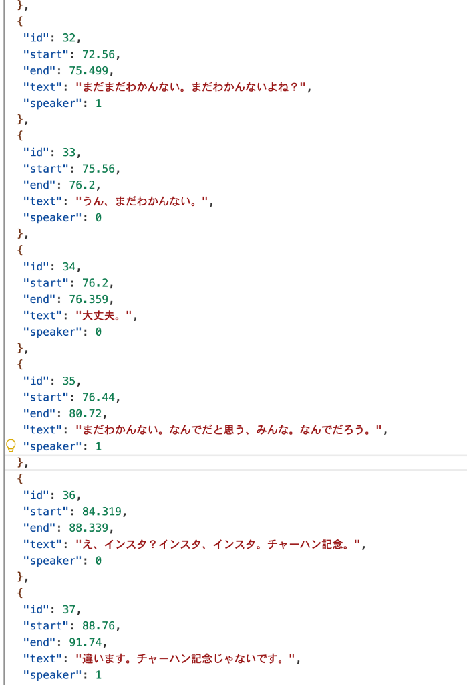
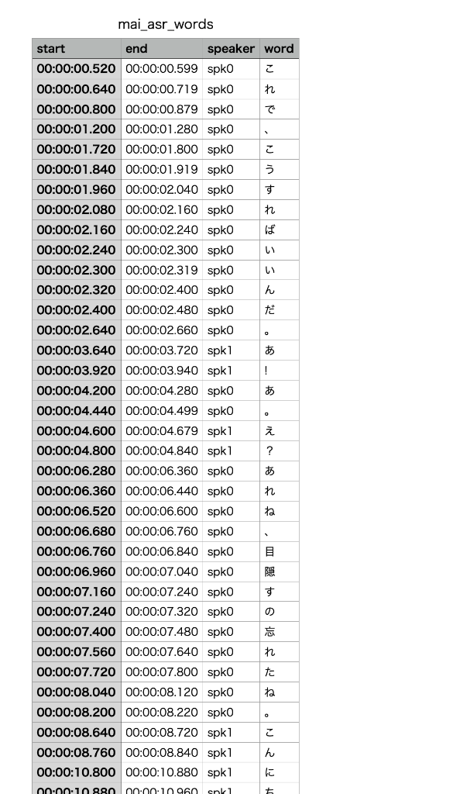
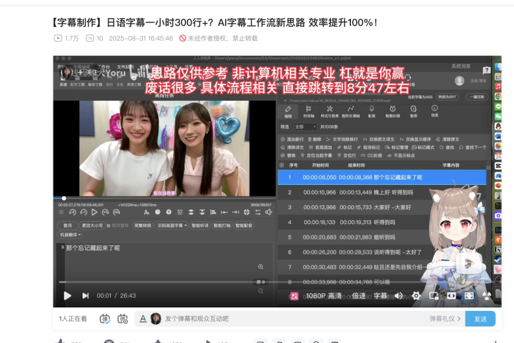

P2 · TECHNICAL DEEP-DIVE
技术原理
时间轴归程序 · 语义归 LLM · 译名归共享词库
← 回到 P1 项目介绍
SCROLL ▾
为什么需要 atom 这一层
ASR 给两种粒度，都不够用：utterance 太粗（一段好几句话），word 太细（一个假名一行）。字幕需要的是中间层。


build_atoms() · 纯代码、零模型
- speaker 切换必断
- 词间静音 ≥ 1s 必断
- 硬标点
。！？必断，软标点、，：；可断 - 单 atom 超 48 字时长度兜底
- 短促相槌（うん / ええ…）由程序预处理，不进 merge
Merge — LLM 只回答一个问题
输入是带序号的 atom 列表（含一小段上下文尾部），输出是「哪几个相邻 atom 合成一行」的分组。行数、时间戳、speaker 都不由模型产生。
发给模型：
12 | s0 | +0.42s | まだわかんない。
13 | s0 | +1.10s | まだわかんないよね？ (context)
模型只回： {"groups": [[12]]}
程序做： 校验分组连续、不跨长静音、不越批 → 拼装字幕行
缓存键： atom 内容 hash + system prompt + model —— 改任何一个自动失效

这套合并逻辑的完整思路讲解
一小时 300 行的字幕工作流实操版——为什么断句交给模型、时间轴握在程序手里。
bilibili.com/video/BV1tFhCzcEUA ↗
Pre-pass — 一次调用，全片共享的词库
不再给模型发图片和音频：OCR 已经把画面文字变成文本，pre-pass 只做纯文本推理。
输入：
【画面文字】OCR anchor（Jev 筛过 / 原文直进 / cast 名单）
【日文字幕行】merge 后的全部字幕文本
一次 Gemini 调用 → prepass_cache/ 存 JSON → render_glossary() 摊平：
山川さん -> 山川宇衣
とみこさん -> 目黒富子
ねこがみ -> 猫神
去向：glossary.md 注入每一个翻译批次的 system prompt
—— 与外部词库 TRANSLATE_GLOSSARY_PATH 同格式、可叠加
ANCHOR 来源
三路任选
Jev 筛出的实体 · 无凭据时 OCR 原文 · TVer/Abema cast 权威人名（绕过分类直进）。
对比 grillmaster
省掉多模态
pre-pass 输入从 ~140k token（图+音+文）降到 ~20k 纯文本，约 7 倍差距。
MERGE 隔离
零上下文污染
断句不接收任何 OCR/词库内容，merge 缓存不随支线变化失效。
Translate — 契约与兜底
JSON 契约
按 id 对齐
模型只回 {"id": n, "zh": "…"}，程序校验、写回对应行；speaker 分隔符 " -" 由程序预插、模型只保留。
二分重试
缺行不对齐
漏了 id 就把批次对半切开重试；失败批次不进 zh_cache/，重跑只补缺口。
模型可选
按阶段覆盖
SEGMENT_MODEL / TRANSLATE_MODEL / PREPASS_MODEL → GEMINI_MODEL → 默认。3.x 用 LLM_THINKING_LEVEL。
远程来源
yt-dlp 前置
BV / ep / Abema / YouTube ID 或 URL 直接当 input；TVer/Abema 额外抓出演者名单喂 pre-pass。
github.com/Yoru0908/maijev